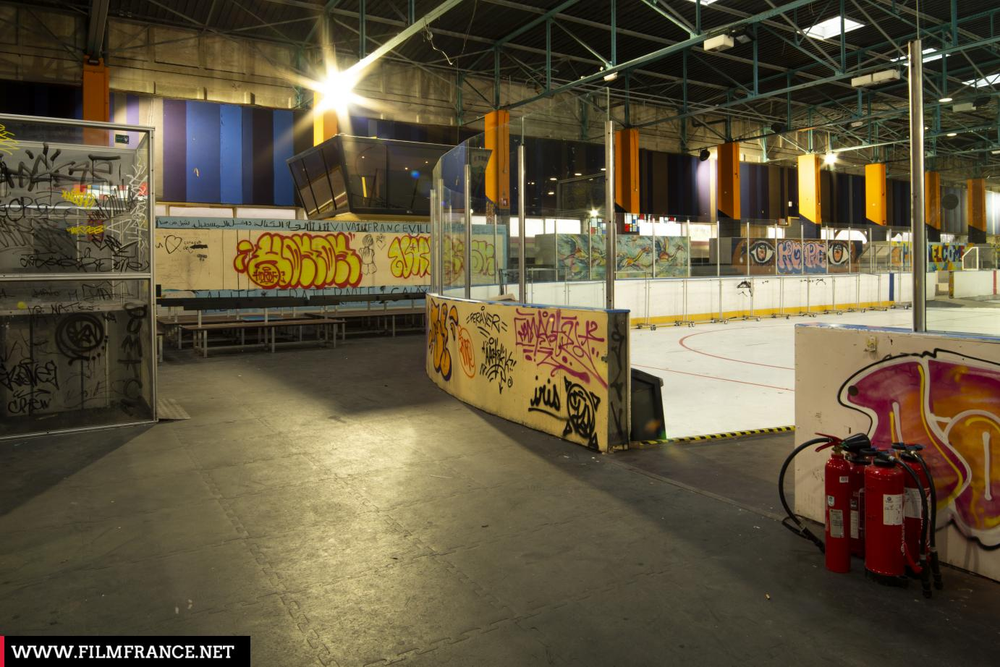

Par Simon FAGAN, Maëlwenn PIERROT, Kadidiatou DABO et Ilaysha MICHEL
En 1975, la patinoire Oréades ouvre ses portes ainsi que la piscine dans le but de créer un complexe piscine-patinoire pour du divertissement. Cette ancienne patinoire est située au sein du quartier de Cergy-préfecture dont le bâtiment est l’un des plus anciens de la ville nouvelle. Ce lieu de divertissement devenu très vite attractif a pourtant fermé ses portes en 2016 après 40 ans d’activité. C’est finalement l’Aren’Ice, beaucoup plus moderne, situé à Saint Christophe qui prend la relève. Pendant ce temps, l’ancienne patinoire de Cergy occupe des fonctions diverses et variées. Alors, pourquoi ce lieu aussi emblématique de la ville fréquenté depuis les années 70 a-t-il fermé ses portes ?
Comment les décisions techniques, politiques et sociales autour de la patinoire de Cergy a mené à sa fermeture ?
Nous avons choisi de faire dans un premier temps une frise chronologique pour représenter l'histoire de l'ancienne patinoire (depuis sa construction dans les années 1970 jusqu’à sa reconversion actuelle en un ensemble immobilier). Elle se lit dans le sens croissant des dates. À travers cela nous voulons montrer la transformation progressive de l'ancienne patinoire, et nous demander si sa destruction était une bonne idée (écologique/économique). Ainsi nous avons mis en évidence son passé sportif et culturel (patinoire publique, club de hockey, événements locaux), son rôle social (centre d’accueil pour migrants), son réinvestissement artistique temporaire (la Peintinoire), et enfin, son recyclage urbain à travers le projet Oréades (logements, bureaux, jardins...). Nous avons choisis une frise pour raconter l’évolution du site de manière claire et visuelle. La frise permet de suivre les grandes étapes de vie de la patinoire, de sa création à sa reconversion, tout en valorisant sa mémoire collective.
L’arbre des causes présenté dans le document cherche à expliquer pourquoi la patinoire construite en 1977 a été abandonnée. Ça nous permet d’analyser les différentes raisons qui ont mené à cette décision. Les installations sont devenues obsolètes. Avec près de 40 ans d’utilisation, la patinoire souffrait d’un vieillissement de ses infrastructures. Le système de réfrigération ne fonctionnait plus correctement, et l’ensemble du bâtiment ne répondait plus aux normes actuelles. Pour la remettre aux standards modernes (accessibilité PMR, sécurité, isolation…), il aurait fallu engager des travaux très coûteux (et les collectivités ne suivaient pas). Un nouveau concurrent moderne : l’ArenIce a vu le jour. En 2016, un nouveau complexe sportif appelé ArenIce a été inauguré. Plus moderne, plus grand, et mieux équipé, il est rapidement devenu le centre national du hockey sur glace en France. Naturellement, les habitants ont préféré se rendre dans ce nouveau lieu, ce qui a entraîné une baisse de fréquentation de l’ancienne patinoire. Des priorités politiques et sociales différentes. La CACP a fait le choix de ne pas investir dans la rénovation de la patinoire. À la place, elle a préféré utiliser le site pour d’autres projets considérés comme plus urgents ou utiles à la population, comme l’accueil de migrants, la mise en place d’exposition en libre accès ou encore la mise en place d’un centre de vaccination. Les normes ont évolué. Depuis les années 1970, les normes en matière de construction et d’accueil du public ont beaucoup changé. Pour que la patinoire soit aux normes, il aurait fallu investir dans de nombreux travaux techniques. Ça a fortement pesé dans la décision de l’abandonner.
La fermeture de la patinoire de Cergy est due à un ensemble de décisions techniques, politiques et sociales. D’un côté, les responsables politiques comme la mairie et l’agglomération ont fait le choix de ne pas rénover la patinoire, car cela aurait coûté trop cher. De l’autre, il a été constaté que le bâtiment était devenu trop vieux, qu'il n'était plus conforme aux normes, et très difficile à moderniser. Enfin, même si la patinoire était un lieu important pour les habitants, les clubs de hockey ou de patinage, la mobilisation de ces usagers a été faible ou peu prise en compte. Ca montre que la fermeture d’un équipement public ne dépend pas seulement de son état technique, mais aussi des priorités politiques et de la place qu’on accorde aux besoins sociaux dans les décisions d’aménagement.